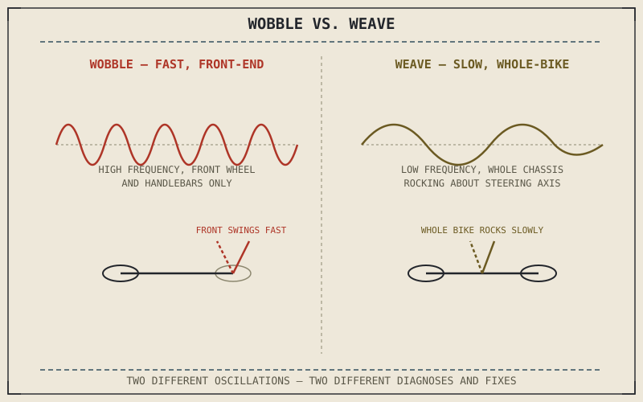

Every stabilizing effect this part has described — trail's self-centering geometry, gyroscopic resistance to tilting — can, under the wrong combination of conditions, stop stabilizing and start doing the opposite, feeding a small disturbance into a larger and larger oscillation instead of damping it out. This is genuine instability, and it comes in two recognizably different forms that this chapter distinguishes clearly.
Chapter 8.10 closed by naming wobble and weave as this chapter's subject. This chapter explains both.
Wobble: A Fast, Front-End Oscillation
Wobble, sometimes called a tank-slapper in its most severe form, is a rapid, side-to-side oscillation of the front wheel and handlebars, typically triggered by a disturbance like a bump, a gust of wind from Chapter 8.8, or a hand accidentally releasing pressure on the bars. It's fundamentally a front-end phenomenon, involving the steering system's own natural oscillation frequency, and once triggered, it can feed on itself if the frequency happens to match how quickly the front suspension and steering geometry naturally want to oscillate — each swing back and forth adding energy rather than the system damping it away as it normally would. Chapter 4.4's trail and Chapter 8.9's gyroscopic precession both shape that natural frequency, but neither is designed to add resistance against it; a dedicated steering damper, a hydraulic component fitted between the frame and the fork specifically to resist rapid steering oscillation, is the hardware built to suppress this kind of self-reinforcing swing before it can build.
Weave: A Slower, Whole-Bike Oscillation
Weave is a distinctly different phenomenon: a slower, side-to-side oscillation involving the entire motorcycle rocking gently about its steering axis, typically at higher speed than wobble tends to occur, and often associated with a heavily loaded touring bike, an unevenly distributed load, or worn suspension components no longer providing the damping Chapter 5.3 described as essential to controlling spring motion. Where wobble is a fast, front-end-dominant event, weave is a slower, whole-chassis event, and the two require genuinely different diagnostic thinking despite both being broadly described as "instability."
Wobble and weave aren't the same problem at different speeds — wobble is a fast front-end oscillation usually triggered by a sudden disturbance, while weave is a slower, whole-bike oscillation usually tied to load distribution or worn damping. Treating them as one problem leads to the wrong fix.

Two oscillation graphs side by side — a fast, high-frequency wobble oscillation confined to the front wheel and handlebars, and a slower, lower-frequency weave oscillation involving the whole motorcycle's body rocking about the steering axis.
Why This Chapter Closes With a Warning About Overcorrection
The instinctive rider response to either wobble or weave — gripping the handlebars tighter and trying to force the bike straight — is usually counterproductive, since a rigid grip can actually feed energy into the oscillation rather than damping it, particularly for wobble's front-end-focused frequency. The generally recommended response, closing the throttle smoothly and allowing the bike's own damping to work rather than fighting it with additional rider input, only makes sense once wobble and weave are understood as genuine oscillating systems rather than the bike simply "getting away" from the rider in some vague sense.
A Common Misconception, Cleared Up Early
It's easy to assume wobble and weave are rare, exotic failures that only afflict poorly designed motorcycles or extreme conditions. Every motorcycle has some theoretical oscillation frequency where wobble or weave could develop under the right combination of speed, load, and disturbance; good design, correct tyre pressure, functioning suspension damping, and a properly set steering damper all work to keep that frequency and the conditions that excite it well outside normal riding, rather than eliminating the underlying physical possibility entirely. This is why worn suspension, incorrect tyre pressure, or an unevenly packed load — all covered in earlier parts — can turn a design that never exhibits instability under normal conditions into one that occasionally does.
Where This Leads
Part VIII has now covered friction, cornering forces, load transfer, aerodynamics, gyroscopic effects, and instability — the unifying physics behind every hardware part this book has covered. Chapter 8.12 closes this part by placing all of it back into the whole motorcycle system.
Key Concepts to Remember
- Wobble is a fast, front-end oscillation typically triggered by a sudden disturbance, controlled largely by trail and the steering damper.
- Weave is a slower, whole-motorcycle oscillation typically tied to load distribution or worn suspension damping.
- Good design and correct maintenance keep every motorcycle's theoretical instability frequency outside normal riding conditions, rather than eliminating the underlying physical possibility.
Cross-References
| ← Ch. 4.4 | Established trail's self-centering geometry; this chapter shows how the same geometry can, under certain conditions, contribute to wobble instead of stability. |
| ← Ch. 8.9 | Established the precession-rate relationship shaping the front end's natural oscillation frequency; this chapter shows that same frequency feeding wobble if a disturbance matches it. |
| ← Ch. 5.3 | Established damping's role in controlling spring motion; this chapter shows worn damping as a direct contributor to weave. |
| → Ch. 8.12 | Closes Part VIII by placing all of this part's unifying physics back into the whole motorcycle system. |